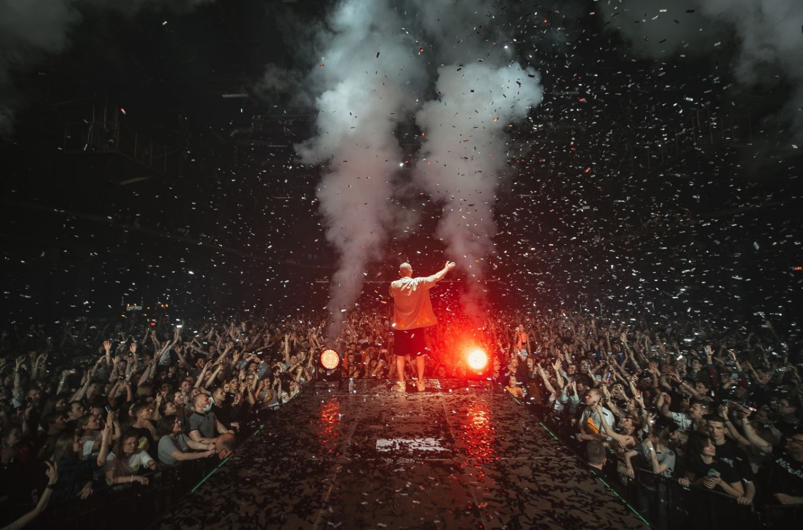
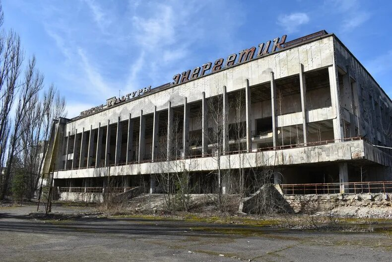

Концерт ATL
Живое выступление с мощной атмосферой, светом и энергией толпы. После таких событий ещё долго ходишь под впечатлением.
События и места, которые оставили яркий след.

Живое выступление с мощной атмосферой, светом и энергией толпы. После таких событий ещё долго ходишь под впечатлением.
Место, где можно увидеть новые игры, попробовать демо-версии и познакомиться с другими игроками. Атмосфера, заряжающая на новые идеи.

Прогулки по заброшенным зданиям и атмосферным локациям. Напоминает Зону из «Сталкера» — тихо, мрачно и по-своему красиво.